Παράδειγμα εκτέλεσης, βήμα προς βήμα.
Σε κάθε βήμα γράφεται τι ζητάει το πρόγραμμα, τι δόθηκε σε αυτή την εκτέλεση και ποιες συναρτήσεις καλούνται, μαζί με το τι κάνει η καθεμιά. Τα στιγμιότυπα είναι από μία πραγματική εκτέλεση της εφαρμογής.
Το πρόγραμμα μιλάει στον χρήστη στα αγγλικά. Οι ερωτήσεις του παρατίθενται αυτολεξεί, σε σκούρο πλαίσιο. Από κάτω γράφεται τι πληκτρολογήθηκε στο παράδειγμα και ποιες συναρτήσεις έτρεξαν για να βγει η οθόνη του στιγμιότυπου.
Όλες οι κλάσεις βρίσκονται στο αρχείο Main.java. Το μενού το χειρίζεται η Main.showMenu. Σε κάθε επιλογή καλεί μία συνάρτηση και, όταν εκείνη τελειώσει, ξανατυπώνει το μενού.
| Κατηγορία | Ποσοστό που αφαιρείται από κάθε τεμάχιο |
|---|---|
| Clothes | 5% |
| Electronics | 10% |
| Food/Drinks | 2% |
| Misc | 1% |
Η εκτέλεση ξεκινά από τη main. Πριν εμφανιστεί το μενού, το πρόγραμμα διαβάζει τρία αρχεία και τυπώνει τη διαδρομή του καθενός.
Πριν από την ερώτηση έχει ήδη τυπώσει τις δέκα επιλογές του μενού και τον τίτλο __|| NLSS E-Shop ||__.
| Συνάρτηση | Τι κάνει σε αυτό το βήμα |
|---|---|
| Main.main | Δημιουργεί τα αντικείμενα της εφαρμογής, ορίζει τα ονόματα των αρχείων και ξεκινά τη φόρτωση. |
| Catalog.restoreCatalog | Ανοίγει το Data/catalog.txt. Κάθε μπλοκ που αρχίζει με __New_Item__ γίνεται προϊόν. |
| new Product | Αποθηκεύει όνομα, κατηγορία, βάρος και τιμή, και δίνει τον επόμενο κωδικό, ξεκινώντας από το 1. |
| Catalog.addProduct | Βάζει το νέο προϊόν στη λίστα του καταλόγου. |
| new Cart | Φτιάχνει άδειο καλάθι συνδεδεμένο με αυτόν τον κατάλογο. |
| Orders.restoreHistory | Διαβάζει το Data/historyLog.txt και ξαναφτιάχνει τις παλιές αγορές. |
| RestoreOrderHistoryObject | Μετατρέπει τον κωδικό και την ποσότητα μιας γραμμής του αρχείου από κείμενο σε ακέραιους. |
| Cart.addProduct | Γεμίζει το καλάθι της παλιάς αγοράς με τα προϊόντα και τις ποσότητες του αρχείου. |
| new History | Κρατά την ημερομηνία, το τελικό ποσό και ένα αντίγραφο εκείνου του καλαθιού. |
| Cart.copy | Φτιάχνει το αντίγραφο, ώστε μια αλλαγή στο τρέχον καλάθι να μην πειράζει το ιστορικό. |
| Cart.restoreCart | Διαβάζει το Data/cartLog.txt και ξαναβάζει στο ανοιχτό καλάθι ένα τεμάχιο για κάθε αποθηκευμένο κωδικό. |
| Main.showMenu | Τυπώνει το μενού και περιμένει ακέραιο από το 1 έως το 10. |
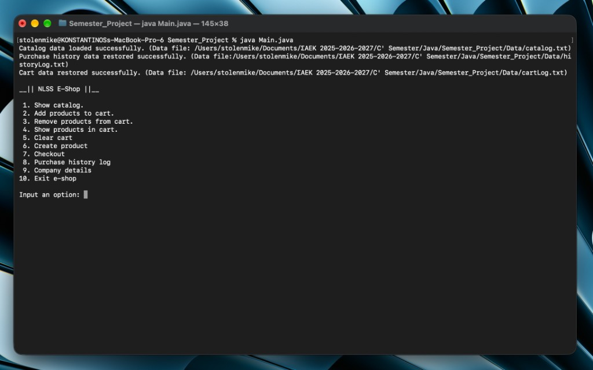
Δεν κάνει άλλη ερώτηση. Με την επιλογή 1 τυπώνει τον κατάλογο και επιστρέφει στο μενού. Σε αυτή την προβολή δεν εμφανίζονται κωδικοί προϊόντων.
| Συνάρτηση | Τι κάνει σε αυτό το βήμα |
|---|---|
| Main.showMenu | Διαβάζει την επιλογή 1 και μπαίνει στην αντίστοιχη περίπτωση του switch. |
| Catalog.showCatalog(false) | Διατρέχει τα προϊόντα και τυπώνει όνομα, τιμή, κατηγορία και βάρος. Η παράμετρος false κρύβει το Id. |
| Product.getName | Επιστρέφει το όνομα που τυπώνεται πρώτο σε κάθε προϊόν. |
| Product.getPrice | Επιστρέφει την τιμή. Εδώ τυπώνεται ως αριθμός ακολουθούμενος από €. |
| Product.getCategory | Επιστρέφει την κατηγορία, για παράδειγμα Clothes ή Electronics. |
| Product.getWeight | Επιστρέφει το βάρος σε γραμμάρια. Πάνω από 1000 γραμμάρια η προβολή το μετατρέπει σε κιλά. |
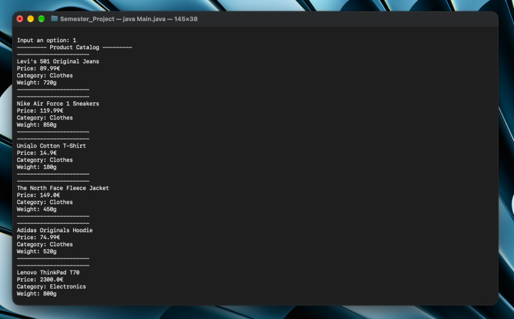
Η προσθήκη δεν γίνεται με το όνομα. Ο χρήστης διαλέγει κωδικό, γι’ αυτό ο κατάλογος τυπώνεται ξανά, αυτή τη φορά με Id και με την ποσότητα που βρίσκεται ήδη στο καλάθι.
Η λέξη Exit διακόπτει τον διάλογο και γυρίζει στο μενού. Η σύγκριση δεν κοιτάζει κεφαλαία και πεζά.
| Συνάρτηση | Τι κάνει σε αυτό το βήμα |
|---|---|
| Main.showMenu | Αναγνωρίζει την επιλογή 2. |
| Main.add_product_to_cart | Ανοίγει τον διάλογο προσθήκης και επαναλαμβάνει την ερώτηση του κωδικού μέχρι να δοθεί Exit. |
| Catalog.showCartCatalog(true, cart, false) | Τυπώνει όλα τα προϊόντα. Η πρώτη παράμετρος εμφανίζει το Id. Η τρίτη, false, σημαίνει ότι δεν γίνεται αφαίρεση, άρα δεν κρύβεται κανένα προϊόν. |
| Cart.getAmount | Μετράει πόσα τεμάχια αυτού του κωδικού υπάρχουν ήδη στο καλάθι. Η τιμή μπαίνει στη γραμμή In cart. |
| Product.getId | Δίνει τον κωδικό που τυπώνεται κάτω από το όνομα. |
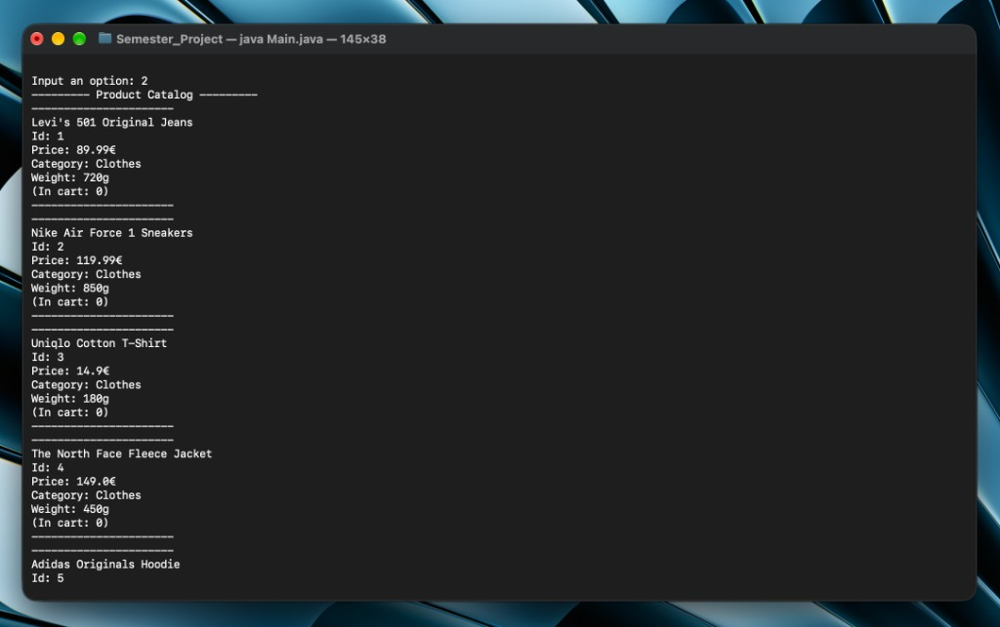
Αν ο κωδικός δεν αντιστοιχεί σε προϊόν, τυπώνει Invalid ID. και ξαναρωτάει. Η ποσότητα περνά από Math.abs, ώστε αρνητικός αριθμός να μετράει ως θετικός.
| Συνάρτηση | Τι κάνει σε αυτό το βήμα |
|---|---|
| Catalog.getProducts | Δίνει τη λίστα στην οποία ψάχνει ο διάλογος τον κωδικό που πληκτρολογήθηκε. |
| Product.getId | Συγκρίνεται με το κείμενο που έδωσε ο χρήστης. Το 6 ταιριάζει με το ThinkPad. |
| Product.getName | Δίνει το όνομα που μπαίνει στο μήνυμα επιβεβαίωσης. |
| Cart.addProduct(6, 2) | Βρίσκει το προϊόν με κωδικό 6 και το προσθέτει στη λίστα του καλαθιού δύο φορές. |
| Cart.getAmount | Μετά την προσθήκη επιστρέφει 2, οπότε το μήνυμα γράφει (x2) και όχι τη φράση της μονής προσθήκης. |
| Product.getPrice | Δίνει την τιμή μονάδας, 2300.0, που τυπώνεται στην επιβεβαίωση. |
| Cart.getTotalPrice | Αθροίζει τις τιμές των τεμαχίων του καλαθιού. Δύο φορές 2300 δίνουν 4600.0. |
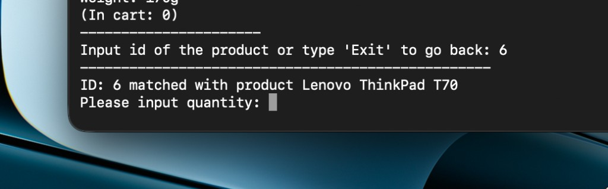
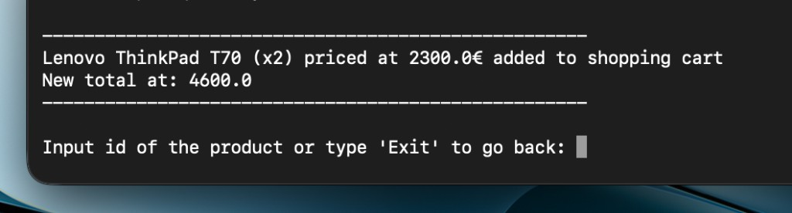
Η ερώτηση είναι ίδια με της προσθήκης. Διαφορετικός είναι ο κατάλογος που έχει τυπωθεί από πάνω: λείπουν τα προϊόντα με μηδενική ποσότητα.
| Συνάρτηση | Τι κάνει σε αυτό το βήμα |
|---|---|
| Main.showMenu | Αναγνωρίζει την επιλογή 3. |
| Main.remove_product_from_cart | Ανοίγει τον διάλογο αφαίρεσης και μένει σε αυτόν μέχρι να δοθεί Exit. |
| Catalog.showCartCatalog(true, cart, true) | Τυπώνει κατάλογο με κωδικούς. Η τρίτη παράμετρος, true, λέει ότι ο χρήστης αφαιρεί, οπότε προϊόν με ποσότητα μικρότερη του 1 παραλείπεται. |
| Cart.getAmount | Χρησιμοποιείται και για το φίλτρο και για τη γραμμή In cart. Εδώ επιστρέφει 2. |
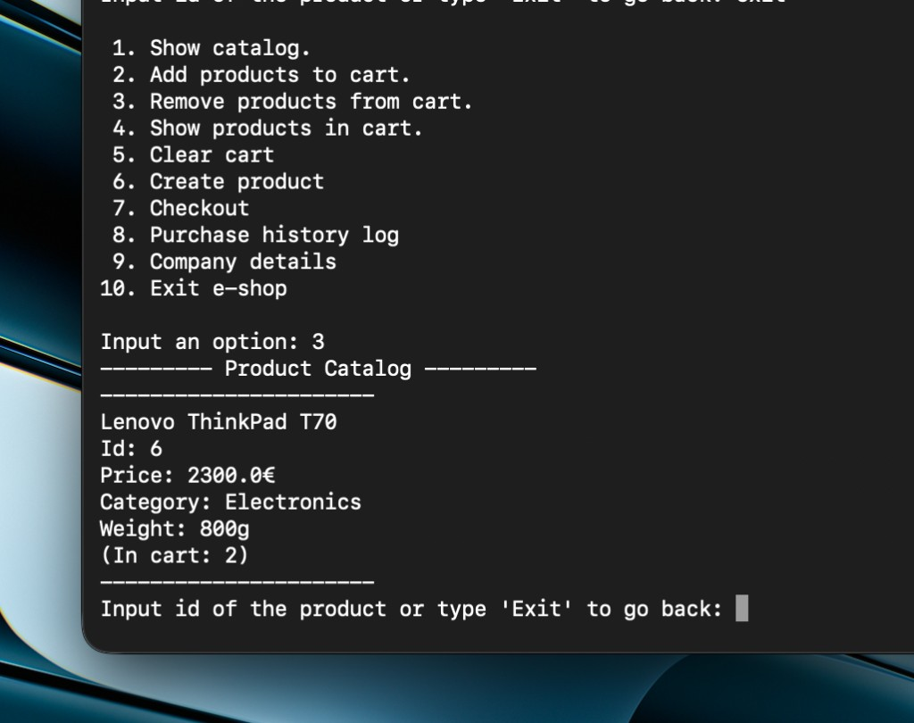
Αν η ποσότητα είναι μεγαλύτερη από όσα τεμάχια υπάρχουν, αφαιρούνται όλα και το μήνυμα γίνεται All quantities of the product removed from the cart.
| Συνάρτηση | Τι κάνει σε αυτό το βήμα |
|---|---|
| Product.getId | Επιβεβαιώνει ότι το 6 είναι το ThinkPad και ότι αυτό υπάρχει στο καλάθι. |
| Cart.getAmount | Πριν από την αφαίρεση κρατά την παλιά ποσότητα, ώστε το μήνυμα να ξέρει αν αδειάζει το προϊόν. |
| Cart.removeProduct(6, 1) | Περιορίζει την ποσότητα σε όσα υπάρχουν και αφαιρεί ένα τεμάχιο του κωδικού 6 από τη λίστα. |
| Product.getName | Δίνει το όνομα στο μήνυμα της αφαίρεσης. |
| Cart.getTotalPrice | Ξαναϋπολογίζει το σύνολο. Ένα τεμάχιο των 2300 δίνει 2300.0. |
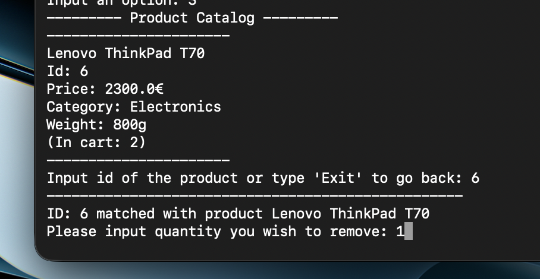
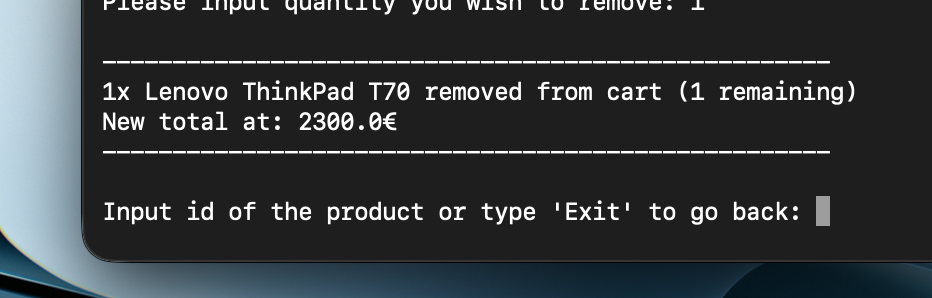
Δεν ζητάει κωδικό ούτε ποσότητα. Τυπώνει την επικεφαλίδα ||Products in cart||, μετά τα προϊόντα και το σύνολο, και γυρίζει στο μενού.
| Συνάρτηση | Τι κάνει σε αυτό το βήμα |
|---|---|
| Main.showMenu | Αναγνωρίζει την επιλογή 4 και τυπώνει την επικεφαλίδα του καλαθιού. |
| Cart.showCart | Μαζεύει τα διαφορετικά προϊόντα και τυπώνει το καθένα μία φορά, με ποσότητα και τιμή. |
| Cart.getAmount | Δίνει την ποσότητα. Εδώ είναι 1, οπότε η τιμή τυπώνεται μία φορά και όχι ως πολλαπλασιασμός. |
| Product.getName / getPrice | Δίνουν το όνομα και την τιμή μονάδας που μορφοποιείται σε ευρώ. |
| Cart.getTotalPrice | Δίνει το σύνολο που τυπώνεται στη γραμμή Total price. |
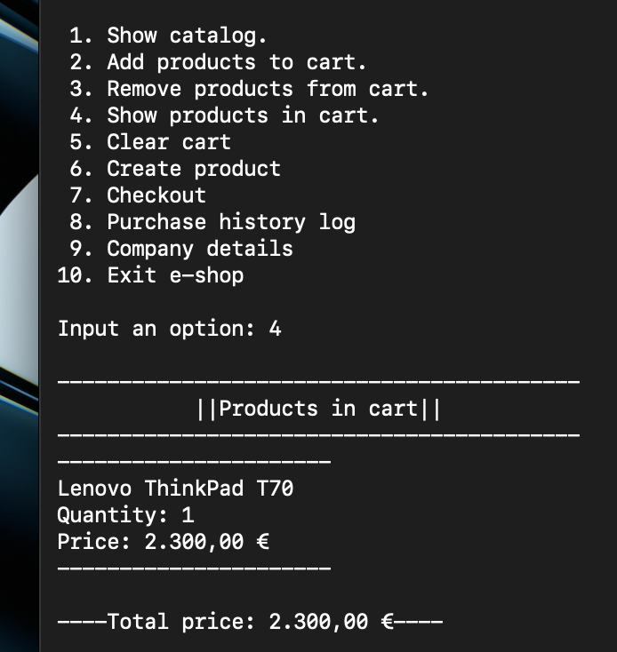
Μόνο η απάντηση Yes, χωρίς διάκριση κεφαλαίων, αδειάζει το καλάθι και τυπώνει Cart cleared successfully. Οποιαδήποτε άλλη απάντηση τυπώνει No changes were made.
| Συνάρτηση | Τι κάνει σε αυτό το βήμα |
|---|---|
| Main.showMenu | Αναγνωρίζει την επιλογή 5. |
| Cart.clearCart | Τυπώνει την ερώτηση, διαβάζει μία γραμμή και, αν είναι Yes, καλεί clear στη λίστα του καλαθιού. |
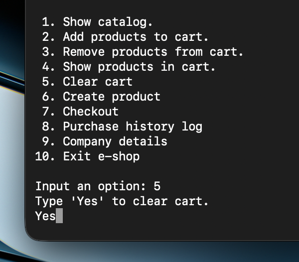
Το νέο προϊόν μπαίνει στον κατάλογο. Δεν μπαίνει αυτόματα στο καλάθι.
Αν το όνομα υπάρχει ήδη, τυπώνει Product with that name already exists. και δεν προχωρά. Με No στην τελευταία ερώτηση το προϊόν δεν καταχωρίζεται. Με Yes, το προσθέτει και ρωτάει Do you wish to create a new product? (Yes/No):. Απάντηση No κλείνει τον διάλογο.
| Συνάρτηση | Τι κάνει σε αυτό το βήμα |
|---|---|
| Main.showMenu | Αναγνωρίζει την επιλογή 6. |
| Main.add_product_to_catalog | Ζητάει τα τέσσερα στοιχεία, ελέγχει αν το όνομα υπάρχει, δείχνει τη σύνοψη και περιμένει Yes ή No. |
| Catalog.getProducts / Product.getName | Χρησιμοποιούνται για να μην καταχωριστεί δεύτερη φορά το ίδιο όνομα. |
| new Product | Με την επιβεβαίωση δημιουργεί το προϊόν και του δίνει τον επόμενο ελεύθερο κωδικό. |
| Catalog.addProduct | Το προσθέτει στη λίστα του καταλόγου. Η αποθήκευση στο αρχείο γίνεται αργότερα, στην έξοδο. |
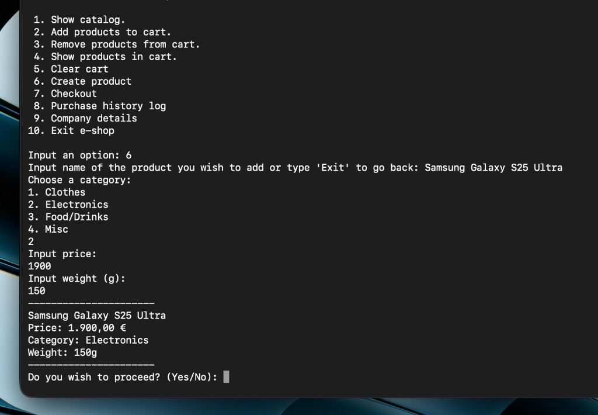
Ίδια ερώτηση με το βήμα 2. Η διαφορά είναι το περιεχόμενο του καταλόγου: στο τέλος του υπάρχει πλέον το προϊόν που μόλις δημιουργήθηκε.
| Συνάρτηση | Τι κάνει σε αυτό το βήμα |
|---|---|
| Catalog.showCatalog(false) | Ξανατυπώνει όλον τον κατάλογο, μαζί με το προϊόν που πρόσθεσε η addProduct. |
| Product.getName | Επιστρέφει Samsung Galaxy S25 Ultra. |
| Product.getPrice | Επιστρέφει 1900, που τυπώνεται ως 1900.0€. |
| Product.getCategory | Επιστρέφει Electronics, την κατηγορία που αντιστοιχεί στην επιλογή 2. |
| Product.getWeight | Επιστρέφει 150. Επειδή δεν ξεπερνά τα 1000, τυπώνεται 150g. |
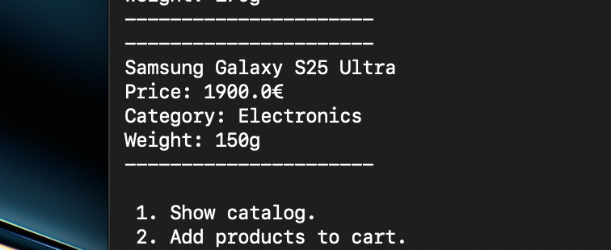
Οι συναρτήσεις είναι οι ίδιες με τα βήματα 3 και 4: add_product_to_cart, showCartCatalog, Cart.addProduct και Cart.getTotalPrice. Το άθροισμα πριν από οποιαδήποτε έκπτωση είναι 1.900 + 2.300 = 4.200 €.
Πριν από την ερώτηση τυπώνει τα προϊόντα, την έκπτωση του καθενός, το ενδιάμεσο σύνολο και την απόφαση για τα μεταφορικά. Στο παράδειγμα η γραμμή των μεταφορικών είναι No delivery cost (Cart total over 1,000€).
| Συνάρτηση | Τι κάνει σε αυτό το βήμα |
|---|---|
| Main.showMenu | Αναγνωρίζει την επιλογή 7. |
| Orders.checkout | Συντονίζει την προβολή, τις εκπτώσεις, τα μεταφορικά και τις ερωτήσεις του χρήστη. |
| Cart.showCart | Τυπώνει τα δύο προϊόντα, την ποσότητα 1 και τις τιμές 1.900,00 € και 2.300,00 €. |
| Cart.getTotalPrice | Δίνει το αρχικό σύνολο, 4200, πάνω στο οποίο εφαρμόζονται μετά οι μειώσεις. |
| Orders.getDiscount | Βρίσκει το ποσοστό της κατηγορίας. Για Electronics επιστρέφει 10. |
| Product.getCategory / getPrice / getName / getWeight | Δίνουν τα στοιχεία που χρειάζονται το μήνυμα της έκπτωσης και ο υπολογισμός των μεταφορικών. |
Τα μεταφορικά, πριν μηδενιστούν, θα ήταν το βάρος κάθε τεμαχίου σε κιλά επί 0,95. Εδώ η συνθήκη του συνόλου τα κάνει 0 και τυπώνεται το αντίστοιχο μήνυμα.
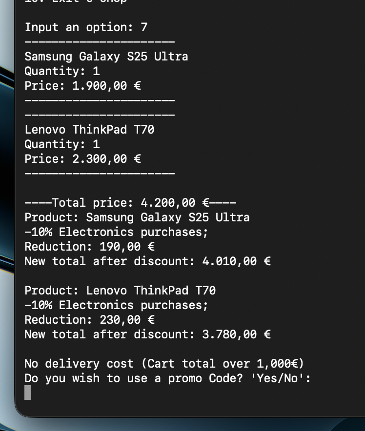
Αν ο κωδικός δεν υπάρχει, η ερώτηση επαναλαμβάνεται: Promo code doesn't exist Please enter a valid promo code:. Η λέξη checkout σταματά την αναζήτηση και η αγορά συνεχίζει χωρίς έκπτωση κωδικού.
| Συνάρτηση | Τι κάνει σε αυτό το βήμα |
|---|---|
| Orders.checkout | Διαβάζει την απάντηση Yes/No και, επειδή είναι καταφατική, ανοίγει την εισαγωγή του κωδικού. |
| Orders.checkPromo | Συγκρίνει το κείμενο με τους αποθηκευμένους κωδικούς, χωρίς διάκριση κεφαλαίων. Για τον M3T4M0RF0S1 επιστρέφει true και ο βρόχος σταματά. |
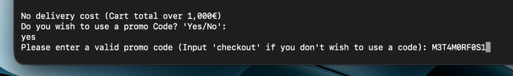
Πριν από την ερώτηση τυπώνει Valid code!, τον κωδικό με κεφαλαία, την έκπτωση και το νέο σύνολο. Με Yes η αγορά καταχωρίζεται και το καλάθι αδειάζει. Με οποιαδήποτε άλλη απάντηση δεν δημιουργείται εγγραφή ιστορικού.
| Συνάρτηση | Τι κάνει σε αυτό το βήμα |
|---|---|
| Orders.getPromo | Βρίσκει τη θέση του κωδικού στον πίνακα και επιστρέφει το αντίστοιχο ποσοστό, 15. |
| Orders.checkout | Εφαρμόζει τη διαίρεση, τυπώνει το νέο σύνολο και διαβάζει την τελική επιβεβαίωση. |
| new History | Με το Yes δημιουργεί την εγγραφή: αντίγραφο καλαθιού, ποσό 3286.96 και ημερομηνία σε μορφή ηη/μμ/εεεε. |
| Cart.copy | Την καλεί ο κατασκευαστής της History, ώστε η εγγραφή να κρατήσει τα προϊόντα και μετά το άδειασμα του καλαθιού. |
| Cart.getCart().clear | Αδειάζει το τρέχον καλάθι. Η αγορά μένει μόνο στο ιστορικό. |
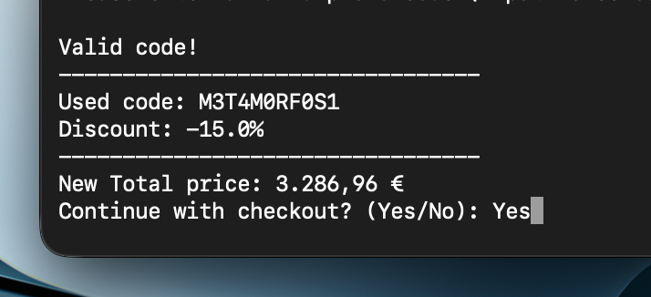
Δεν κάνει άλλη ερώτηση. Αν δεν υπήρχε καμία αγορά, θα τύπωνε No purchases yet. και θα επέστρεφε στο μενού.
| Συνάρτηση | Τι κάνει σε αυτό το βήμα |
|---|---|
| Main.showMenu | Αναγνωρίζει την επιλογή 8. |
| Orders.showHistory | Διατρέχει τις εγγραφές και για καθεμία τυπώνει αριθμό, ημερομηνία, προϊόντα και τελικό ποσό. |
| History.showDate | Τυπώνει τη γραμμή Date of transaction με την αποθηκευμένη ημερομηνία. |
| History.getCart | Επιστρέφει το αντίγραφο του καλαθιού εκείνης της αγοράς. |
| Cart.showCart | Τυπώνει τα προϊόντα του αντιγράφου. Γι’ αυτό φαίνονται ακόμη, παρότι το τρέχον καλάθι έχει αδειάσει. |
| History.getPurchaseCost | Επιστρέφει το 3286.96, που τυπώνεται ως Total price after discounts. |
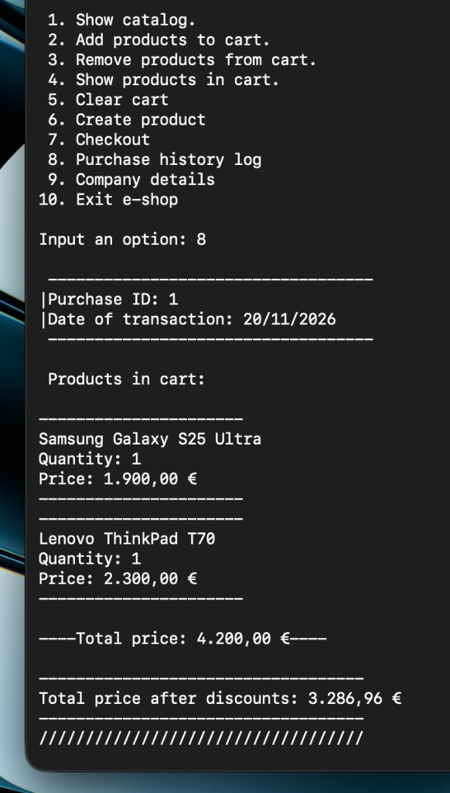
Δεν ζητάει άλλα στοιχεία. Η επιλογή 9 μόνο εμφανίζει τα σταθερά στοιχεία της εταιρείας και επιστρέφει στο μενού.
| Συνάρτηση | Τι κάνει σε αυτό το βήμα |
|---|---|
| Main.showMenu | Στην περίπτωση 9 τυπώνει η ίδια τα πεδία της εταιρείας. Δεν καλείται ξεχωριστή συνάρτηση προβολής. |
Τα πεδία που τυπώνονται, με τη σειρά της οθόνης, είναι τα εξής.
| Πεδίο | Τιμή που εμφανίζεται |
|---|---|
| companyName | NEXT LEVEL SHOPPING SOLUTIONS SMPC |
| activity | Retail Sale of Computers, Electronics & Consumer Goods via Internet (NACE 47.91) |
| vat | EL090000045 |
| taxOffice | KEFODE Attikis (Attica Tax Operations Center) |
| adress | 328 Vouliagmenis Avenue, Agios Dimitrios, 173 43, Athens, Greece |
| tel | +30 210 000 0000 |
| info@nlss.gr |
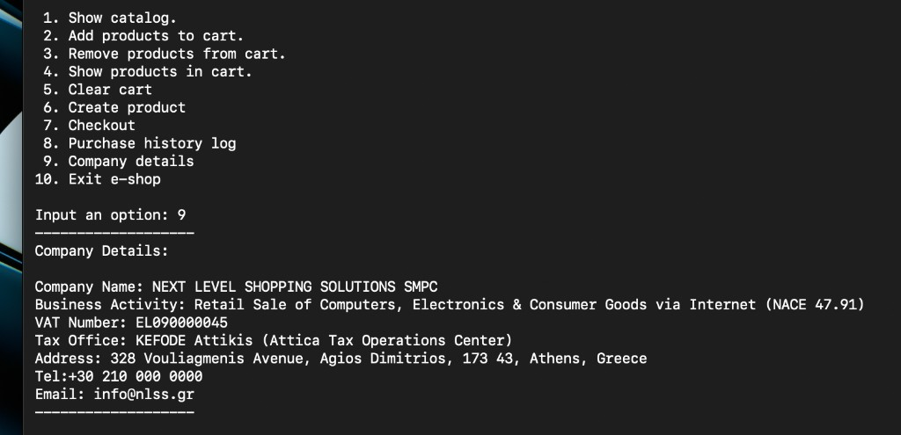
Με το 10 δεν κάνει άλλη ερώτηση. Τυπώνει NLSS log: Saving data..., γράφει τα τρία αρχεία, αναφέρει τη διαδρομή του καθενός και τερματίζει τον βρόχο του μενού.
| Συνάρτηση | Τι κάνει σε αυτό το βήμα |
|---|---|
| Main.showMenu | Αναγνωρίζει την επιλογή 10, τυπώνει το μήνυμα αποθήκευσης και μετά κλείνει τον βρόχο. |
| Cart.saveCart | Γράφει στο Data/cartLog.txt έναν κωδικό ανά γραμμή, για κάθε τεμάχιο που έχει μείνει στο καλάθι. |
| Orders.saveHistory | Γράφει κάθε αγορά στο Data/historyLog.txt και, σε μορφή κειμένου για ανάγνωση, στο Logs/historyLog.txt. |
| History.getDate | Δίνει την ημερομηνία που γράφεται πρώτη γραμμή της αγοράς. |
| History.getCart / Cart.getAmount | Δίνουν τα προϊόντα και την ποσότητα κάθε κωδικού, ώστε το αρχείο να γράψει ζεύγη κωδικού και ποσότητας. |
| History.getPurchaseCost | Δίνει το τελικό ποσό που γράφεται μετά τη γραμμή __OUT__. |
| Catalog.saveCatalog | Ξαναγράφει το Data/catalog.txt. Για κάθε προϊόν γράφει __New_Item__, όνομα, αριθμό κατηγορίας, βάρος και τιμή. |
| Product.getName / getCategory / getWeight / getPrice | Δίνουν τα τέσσερα στοιχεία που γράφει η saveCatalog. |
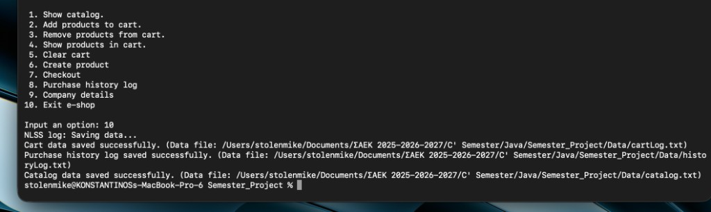
Η έξοδος είναι το σημείο όπου η εκτέλεση γίνεται μόνιμη. Στην επόμενη εκκίνηση η restoreCatalog, η restoreHistory και η restoreCart διαβάζουν ακριβώς αυτά που έγραψε η επιλογή 10.
Η ημερομηνία είναι της αγοράς. Ο κωδικός 20 με ποσότητα 1 είναι το Samsung Galaxy S25 Ultra. Ο κωδικός 6 με ποσότητα 1 είναι το Lenovo ThinkPad T70. Το 3286.96 είναι το ποσό που υπολόγισε η checkout και επέστρεψε η getPurchaseCost.
Το ίδιο γεγονός, σε μορφή που διαβάζεται χωρίς να γνωρίζει κανείς τη δομή του αρχείου δεδομένων: ημερομηνία, όνομα, τιμή μονάδας, ποσότητα και τελικό σύνολο. Αυτό το αρχείο το γράφει πάλι η saveHistory, στο δεύτερο πέρασμά της.
Το αρχείο μένει χωρίς προϊόντα. Η checkout καθάρισε το καλάθι μόλις ο χρήστης επιβεβαίωσε την αγορά, και η saveCart δεν είχε τεμάχια να γράψει.
Ο κατάλογος κλείνει με το προϊόν που δημιουργήθηκε στο βήμα 9. Η saveCatalog γράφει τον δείκτη κατηγορίας, όχι το όνομά της. Το Electronics είναι η θέση 1.
Οι συναρτήσεις με τη σειρά που εμφανίζονται στον κώδικα. Στα προηγούμενα βήματα φαίνεται πού καλείται η καθεμιά.
| Συνάρτηση | Συνοπτικά |
|---|---|
| History.showDate | Τυπώνει την ημερομηνία μιας αγοράς. |
| History.getDate | Επιστρέφει την ημερομηνία ως κείμενο. |
| History.getCart | Επιστρέφει το καλάθι που αποθηκεύτηκε με την αγορά. |
| History.getPurchaseCost | Επιστρέφει το τελικό ποσό, στρογγυλοποιημένο σε δύο δεκαδικά. |
| Product.assignCategory / assignName / assignWeight / assignPrice | Αλλάζουν το αντίστοιχο πεδίο ενός προϊόντος. |
| Product.getName / getCategory / getWeight / getPrice / getId | Επιστρέφουν το αντίστοιχο πεδίο. |
| Catalog.showCatalog | Προβάλλει τον κατάλογο, με ή χωρίς κωδικούς. |
| Catalog.showCartCatalog | Προβάλλει κατάλογο μαζί με την ποσότητα στο καλάθι. |
| Catalog.restoreCatalog | Φορτώνει τα προϊόντα από αρχείο. |
| Catalog.saveCatalog | Αποθηκεύει τα προϊόντα σε αρχείο. |
| Catalog.getProducts | Επιστρέφει τη λίστα των προϊόντων. |
| Catalog.addProduct | Προσθέτει προϊόν στη λίστα του καταλόγου. |
| Cart.addProduct | Προσθέτει ποσότητα ενός κωδικού στο καλάθι. |
| Cart.removeProduct | Αφαιρεί ποσότητα ενός κωδικού από το καλάθι. |
| Cart.getCart | Επιστρέφει τη λίστα των τεμαχίων. |
| Cart.copy | Επιστρέφει ανεξάρτητο αντίγραφο του καλαθιού. |
| Cart.getTotalPrice | Υπολογίζει το άθροισμα των τιμών. |
| Cart.getAmount | Μετρά τα τεμάχια ενός κωδικού. |
| Cart.showCart | Τυπώνει το καλάθι και το σύνολο. |
| Cart.saveCart | Γράφει τους κωδικούς του καλαθιού σε αρχείο. |
| Cart.restoreCart | Ξαναφτιάχνει το καλάθι από αρχείο. |
| Cart.clearCart | Ζητά επιβεβαίωση και αδειάζει το καλάθι. |
| Orders.getDiscount | Επιστρέφει το ποσοστό μιας κατηγορίας. |
| Orders.checkPromo | Ελέγχει αν ένας κωδικός προσφοράς είναι έγκυρος. |
| Orders.getPromo | Επιστρέφει το ποσοστό ενός έγκυρου κωδικού. |
| Orders.checkout | Εκτελεί την ολοκλήρωση της αγοράς. |
| Orders.showHistory | Τυπώνει το ιστορικό αγορών. |
| Orders.restoreHistory | Φορτώνει το ιστορικό από αρχείο. |
| Orders.saveHistory | Αποθηκεύει το ιστορικό σε αρχείο δεδομένων και σε αρχείο ανάγνωσης. |
| Main.add_product_to_cart | Διάλογος προσθήκης στο καλάθι. |
| Main.add_product_to_catalog | Διάλογος δημιουργίας προϊόντος. |
| Main.remove_product_from_cart | Διάλογος αφαίρεσης από το καλάθι. |
| Main.showMenu | Μενού, επιλογές και αποθήκευση κατά την έξοδο. |
| Main.main | Σημείο εκκίνησης της εφαρμογής. |